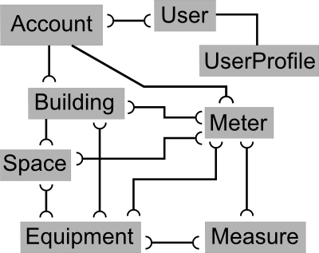

Primary Models¶
The primary models and their relationships are shown in the following figure.
{kind=link}
The User is Django’s built-in model, and the UserProfile simply extends that model allowing custom fields to be connected to each User, such as mobile_phone. Each User may be connected to any number of Accounts, and it is this relationship which defines what a User can access in BuildingSpeak. Future versions may connect Users to lower-level models.
An Account is the top-level object in the BuildingSpeak universe. Generally it will represent an organization, although there may be situations which call for multiple Accounts to be created for one customer or organization. Buildings and Meters are one-to-one with an Account and represent what you’d expect: real world buildings and real world utility meters.
Meters are devices that record the flow of some substance of interest, e.g. electricity, natural gas, and domestic water. All fuel types supported by ENERGY STAR’s Portfolio Manager are supported by BuildingSpeak, along with domestic water (not considered a fuel). Generally, Meters are provided by a utility company and are the basis for the billing that utility provides to its customer. However, larger commercial and institutional customers may have some of their own Meters which they read and maintain themselves.
Meters receive a flow from a utility company or some local source, and the building’s pipes and wires then distribute those flows to the Equipment that consume it in order to provide some useful function such as lighting, heating, or cooling. BuildingSpeak allows many-to-many relationships between Meters and Equipment in order to model real world scenarios. For example, one natural gas Meter may serve multiple rooftop units (pieces of Equipment) for heating, but each of those rooftop units also receive electricity from an electric Meter.
Buildings are actually quite abstract objects in BuildingSpeak, because they don’t directly influence the consumption of energy and water, i.e. the Building itself does not consume anything. The energy and water can be thought of as entering and leaving the building through various ‘pipes’ that penetrate a building’s envelope. These pipes connect directly to Equipment, which are the actual consumers of energy and water. Thus Buildings are more of a boundary grouping together a set of Meters and Equipment. They do, of course, have an impact on utility consumption due to their interaction with the outdoor environment, but this impact can only be seen via the consumption of Equipment and the Meters which serve them.
Spaces are subunits of Buildings with very similar attributes and functionality. They link one-to-one with Buildings and many-to-many with Equipment and Meters.
Measures represent conservation measures (the term ‘energy’ is avoided because Measures may involve domestic water or other non-energy utilities). These are projects building owners undertake to improve the efficiency of their building’s operation or to reduce consumption. Because they deal directly with changes in utility consumption, they attach directly only to Meters and Equipment.